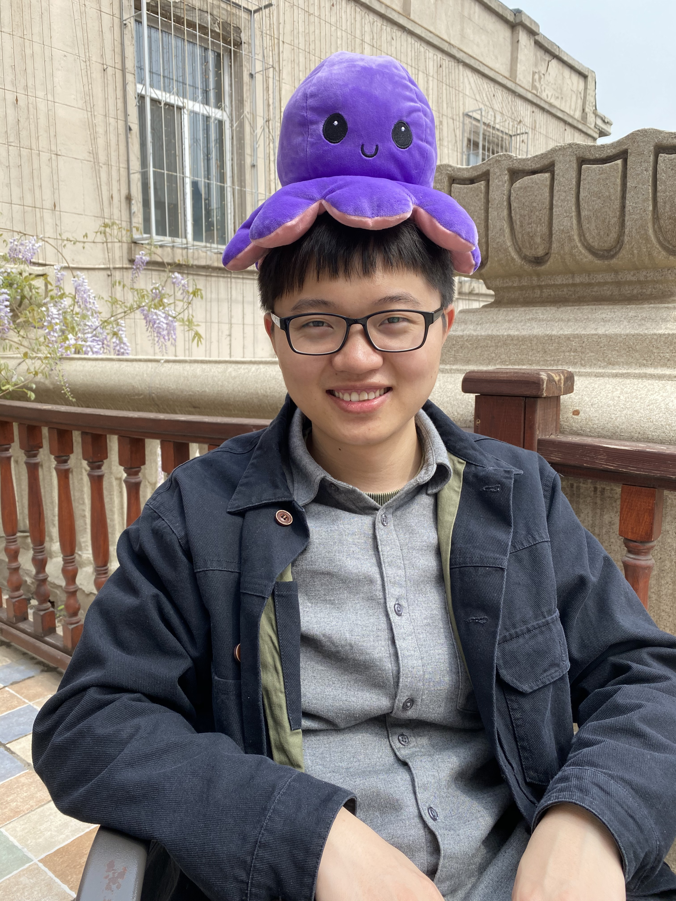

arXiv 2026

Researcher
Tencent Hunyuan
wei.liu.llm@gmail.comI am a Researcher at Tencent Hunyuan. My research interests include LLM Pretraining, Multimodal Learning, and Agentic AI.
Before joining Tencent, I received my PhD from Heidelberg University, Germany, under the supervision of Prof. Michael Strube and Prof. Anette Frank, graduating with summa cum laude. I obtained my master’s degree in Computer Science and Technology from Beihang University and my bachelor’s degree in Software Engineering from Dalian University of Technology, graduating as an Outstanding Graduate from both universities.
arXiv preprint arXiv:2605.04566, 2026
Proceedings of the 2026 Conference on Empirical Methods in Natural Language Processing
Findings of the Association for Computational Linguistics: EMNLP 2026
Findings of the Association for Computational Linguistics: EACL 2026
Findings of the Association for Computational Linguistics: EMNLP 2025
Proceedings of the 2025 Conference on Empirical Methods in Natural Language Processing
Findings of the Association for Computational Linguistics: EMNLP 2025
Proceedings of the 63rd Annual Meeting of the Association for Computational Linguistics, 2025
Proceedings of the 2024 Conference of the North American Chapter of the Association for Computational Linguistics: Human Language Technologies
Proceedings of the 61st Annual Meeting of the Association for Computational Linguistics, 2023
Proceedings of the 61st Annual Meeting of the Association for Computational Linguistics, 2023
Proceedings of the 59th Annual Meeting of the Association for Computational Linguistics and the 11th International Joint Conference on Natural Language Processing, 2021
Proceedings of the 2019 Conference of the North American Chapter of the Association for Computational Linguistics: Human Language Technologies
Based on Minimal Light.